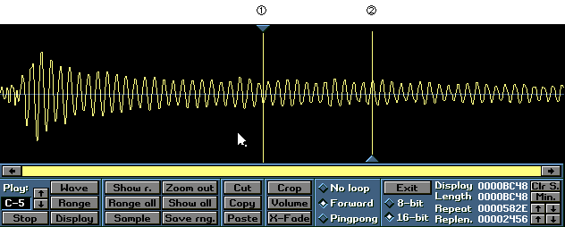
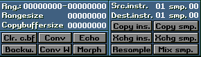

①Ｌｏｏｐの始点
②Ｌｏｏｐの終点
Ｐｌａｙ：
再生の際の音の高さを設定します
Ｗａｖｅ
Ｓａｍｐｌｅを再生します
Ｒａｎｇｅ
選択範囲のみ再生します
Ｄｉｓｐｌａｙ
画面上の波形のみ再生します
Ｓｈｏｗ ｒ．
選択範囲のみを表示します
Ｒａｎｇｅ ａｌｌ
全範囲を選択します
Ｓａｍｐｌｅ
外部から音を取り込みます。
Ｚｏｏｍ ｏｕｔ
表示範囲を拡大します
Ｓｈｏｗ Ａｌｌ
全範囲を表示します
Ｓａｖｅ ｒｎｇ．
選択範囲を名前をつけて保存します（と思われます）
やろうとすると落ちるので確認できていません。
Ｃｕｔ
選択範囲をＣｕｔしてコピーバッファに蓄えます
Ｃｏｐｙ
選択範囲をコピーバッファに蓄えます
Ｐａｓｔｅ
コピーバッファより音をPasteします
Ｃｒｏｐ
選択範囲外の音を消去します
Ｖｏｌｕｍｅ
選択範囲のボリュームを変化させます
Ｓｔａｒｔ ｖｏｌｕｍｅ
始点のＶｏｌｕｍｅを設定します
Ｅｎｄ ｖｏｌｕｍｅ
終点のＶｏｌｕｍｅを設定します
Get maximum scale 画面上最大までVolumeを上げます
Apply
実行します
Ｘ－Ｆａｄｅ
選択された範囲を元にＬｏｏｐの始点と終点を中心に音を滑らかに変化させます。
Ｌｏｏｐを滑らかに行う為に用います。
選択範囲はＬｏｏｐの範囲より小さくないといけません。
８／１６－Ｂｉｔ
ｓａｍｐｌｅを８／１６－ｂｉｔにコンバートします
Ｎｏ ｌｏｏｐ
ここをチェックするとＬｏｏｐは行われません
Ｆｏｒｗａｒｄ
ここをチェックするとＬｏｏｐポインタが現れその範囲を左から右の方向へ音がＬｏｏｐします
Ｐｉｎｇｐｏｎｇ
選択範囲をＬｏｏｐさせますが、上記とは違い左右交互に音がＬｏｏｐします
Ｃｌｒ．ｓ．（Ｃｌｅａｒ Ｓａｍｐｌｅ）
Ｓａｍｐｌｅをクリアします
Ｍｉｎ．（Ｍｉｎｉｍｉｚｅ）
Ｌｏｏｐの終点より右の音を消去します
Ｒｅｐｅａｔ
Ｌｏｏｐ開始位置。数値を変えると始点を移動できます
Ｒｅｐｌｅｎ（Ｒｅｐｅａｔｌｅｎｇｔｈ）
Ｌｏｏｐの長さ。数値を変えると終点を移動できます

Src.instr/smpとDest.instr/smp.の解説はこちらを参照してください。
Ｃｌｒ．ｃ．ｂｆ（Ｃｌｅａｒ ｃｏｐｙ ｂｕｆｆｅｒ）
コピーバッファの内容を消去します
Ｂａｃｋｗ．（Ｂａｃｋｗａｒｄｓ）
選択範囲を前後逆に反転させます
Ｃｏｎｖ
サンプルの位相を反転させます
Ｃｏｎｖ Ｗ
１６－ｂｉｔのサンプルのbyte orderをIntel形式とMotorola形式に交互に変換させます（らしいです）
Ｅｃｈｏ
サンプルに エコーを掛けます
Number of echoes
エコーを掛ける回数を設定します
Echo distanve
エコーの長さを設定します
Fade out
エコーのＦａｄｅの値を設定します
Add memory to sampe
チェックを入れるエコーの長さだけサンプルのサイズが拡大します
Apply
実行します
Ｍｏｒｐｈ
同一インストゥルメント内でdest smpから一連のsampleをもう一方のsampleへ作り出す・・・
らしいですが、やろうとすると落ちるのでどういう効果かは確認できていません
Ｃｏｐｙ ｉｎｓ．/ｓａｍｐ．
選択されているSrc ins/smpからDest ins/smpへSample/Instrumentをコピーします
Ｘｃｈｇ ｉｎｓ．/ｓａｍｐ．
選択されているSrc ins/smpとDest ins/smpを入れ替えます
Ｒｅｓａｍｐｌｅ
Sampleを選択したＦｉｌｅｓｉｚｅで取り込みなおします
これで音の質を変えられます。
Ｍｉｘ ｓｍｐ．
選択されているSrc smpをDist smpへ合成させます